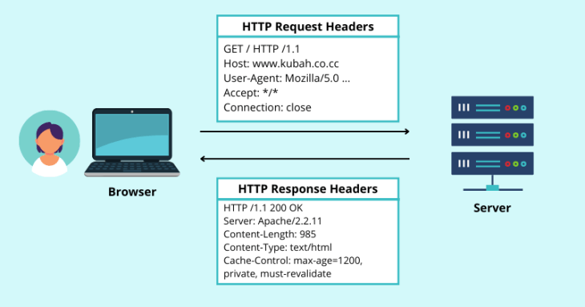
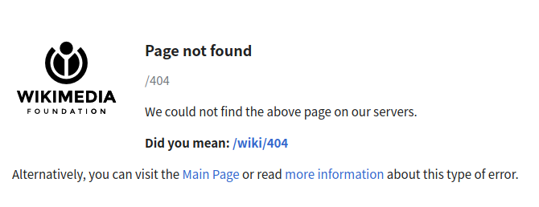
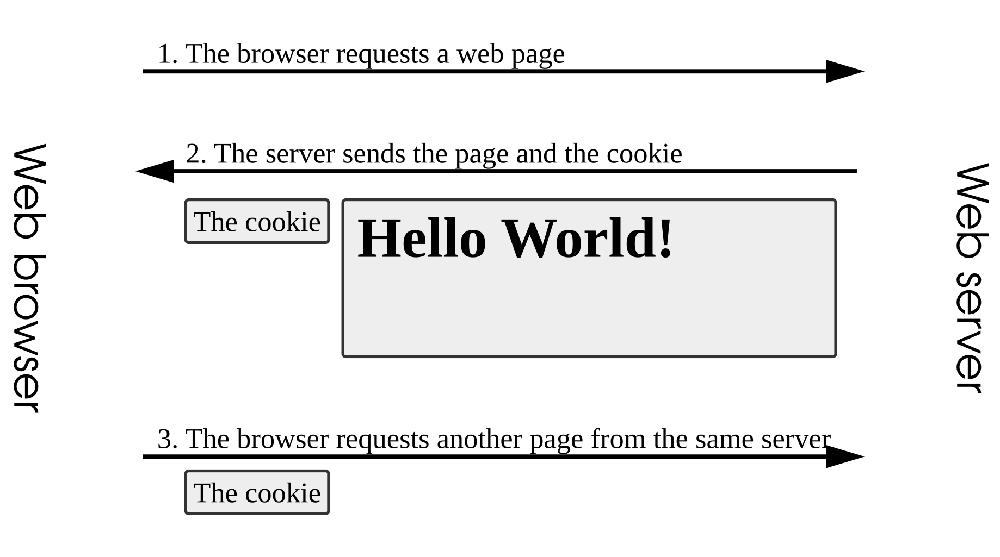
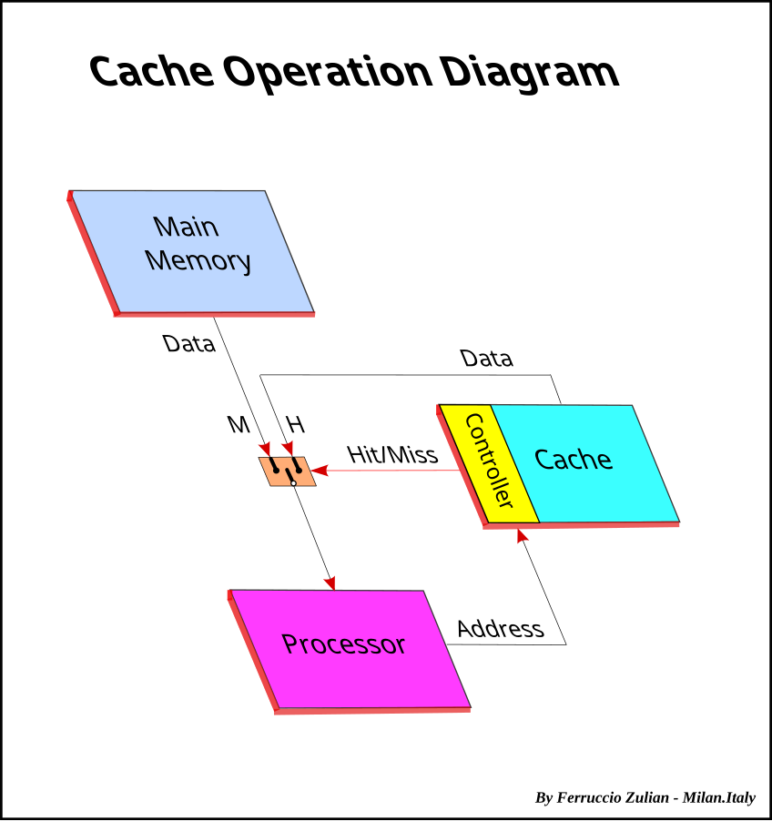

sequenceDiagram
participant Client
participant Server
Client->>Server: HTTP Request
Server->>Client: HTTP Response
Learn Web
ale66
From Web pages to the Web of pages
How does it work?
browsers lets us navigate across domains, countries etc.
local pages are rendered in the same fashion
What is Rendering?
A browser renders a local page by combining the HTML mark-up code with the CSS styles and showing the resulting page
Links on the page are served so each click sends the browser to render a new page and the process starts again
Browsers secretly download the linked page to a local ‘secret’ folder, normally called cache
they also download the needed CSS files, then combine them locally and render
observations
rendering is all local, same as our exercise pages
lots of files need to be downloaded all the times
the computer network is transparent: we realise it’s there only when it malfunctions
donwloading and rendering foreign files requires an agreement (protocol) on syntax and meaning of HTML and CSS
The HTTP protocol
Motivations
local HTML+CSS pages could be useful to present textual materials, but not much
HTTP posits a simple way to transfer HTML/CSS files and render them
participating computers, called servers, will have a dedicated folder, e.g., public_html that is publicly accessible via HTTP
interoperability: pages and styles are treated uniformly everywhere on internet
Key features
<a>links create the web locallyan industrial standard: interoperability across platforms and networks
the rendered page is often the combination of styles, images etc. from disparate online sources
no need to know the underlying computer network, which is abstracted away
Client-server: requests are initiated by the recipient (usually a browser)
An evolving industrial agreement
HTTP/0.9 (1991): The one-line protocol
HTTP/1.0 (1996): Building extensibility
HTTP/1.1 (1997): The standardized protocol
HTTP/2 (2015): A protocol for greater performance
HTTP/3 (2022): HTTP over QUIC
HTTP at work
The client (our computer) sends a request: a short file containing our requests
the server (the computer hosting the web page) processes it and sends back a response.
statelessness: each time a file is needed a new HTTP session is initiated
HTTP Session Example
client starts the session
server may return the requested page or an error message
from blog.logrocket.com/using-next-js-security-headers/
For reference: inside HTTP
HTTP Request Structure
A typical HTTP request contains:
Request Line: Method, URI, HTTP version
Headers: Metadata about the request
Body: Optional data (for POST, PUT, etc.)
HTTP Methods
| Method | Description | Idempotent |
|---|---|---|
| GET | Retrieve a resource | Yes |
| POST | Submit data to create/update | No |
| PUT | Replace a resource | Yes |
| DELETE | Remove a resource | Yes |
| PATCH | Partially modify a resource | No |
| HEAD | Like GET, but without response body | Yes |
| OPTIONS | Describe communication options | Yes |
HTTP Response Structure
A typical HTTP response contains:
- Status Line: HTTP version, status code, status text
- Headers: Metadata about the response
- Body: The actual content (HTML, JSON, etc.)

HTTP response structure
Example HTTP Response
Our browser takes the bottom part of this file and renders it
HTTP Status Codes
Success (2xx)
- 200 OK
- 201 Created
- 204 No Content
Redirection (3xx)
- 301 Moved Permanently
- 302 Found
- 304 Not Modified
Client Errors (4xx)
- 400 Bad Request
- 401 Unauthorized
- 404 Not Found
Server Errors (5xx)
- 500 Internal Server Error
- 502 Bad Gateway
- 503 Service Unavailable
The Famous 404 Error
HTTP 404 error page example
We clicked on an <a> that was wrong or outdated
the page could now be deleted or elsewhere inside public_html or on another server altogether
Discussion: the limits of HTTP today
Issue 1: data confidentiality
HTML/CSS are text files that HTTP downloads on computers
they travel across internet in the clear: any intermediate computer can read them
today only Wikipedia-style pages are safe for HTTP transmission
HTTPS: HTTP + Secure
Issue 2: statelessness
We often experience the visit to a web site as a conversation
via login systems we are used to find our data again, every time
Issue 3: continuity
Audio-video requires a continous connection
Downloading the whole file up front is not always suitable
for live shows/reels there is no file
Servers and browsers implement sophisticated caching algorithms to create the TV/Radio effect :grinning
Issue 1: security
HTTP + TLS/SSL = HTTPS
- Encrypts data in transit
- Authenticates the server with external certification
- Ensures data integrity
- Uses port 443
Issue 2: statelessness
HTTP/2 Improvements
- Binary Protocol: More efficient parsing
- Multiplexing: Multiple requests over single connection
- Header Compression: Reduces overhead
- Server Push: Server can send resources proactively
- Stream Prioritization: Optimize resource delivery
HTTP/3 and QUIC
- Built on the new QUIC protocol
- Uses UDP instead of TCP
- Reduces connection time
- works better on unreliable networks
- implements multiplexing: severl downloads at once
Cookies
Motivations
To create sessions, i.e., a stateful session, browser can save some details on the local client:
a small file called cookie
As a result, servers could read the cookie when we try to connect again and remember our details
Issue 3: continuity
RESTful APIs and HTTP
REST (Representational State Transfer) leverages HTTP:
- Uses standard HTTP methods semantically
- Stateless communication
- Resource-based URLs
- JSON or XML for data exchange
HTTP Caching
Caching reduces server load and improves response times.
Browsers
Browsers are key to HTTP success
They are HTTP clients that:
- Parse HTML and discover resources
- Generate HTTP requests for resources
- Handle responses and render content
- Manage connections and caching
- Execute JavaScript that can trigger more HTTP requests
Following HTML Links
When we click a link:
- the browser parses the URL (is it internal? External?)
- it sends GET request to the server
- the server responds with HTML content
- the browser renders the new page
Navigation HTTP Flow
sequenceDiagram
participant User
participant Browser
participant DNS
participant Server
User->>Browser: Clicks link
Browser->>DNS: Resolve domain
DNS->>Browser: IP address
Browser->>Server: GET /page.html HTTP/1.1
Server->>Browser: 200 OK + HTML
Browser->>User: Renders page
Resources in HTML
In HTML, CSS and JS files are resources
Also embedded images and videos (and sounds) are resources
Browser automatically make HTTP requests for embedded resources:
Each resource triggers a separate HTTP request
Resource Loading Process
The complete procedure for HTML page:
- Parse HTML sequentially from top to bottom
- find resource references (CSS, JS, images, etc.)
- Prioritize requests based on resource type
- Download resources (often in parallel)
- Render progressively as resources arrive
Resource Priority Levels
Different resources have different loading priorities:
| Priority | Resources | Reason |
|---|---|---|
| Highest | CSS in <head> |
Blocks rendering |
| High | Scripts in <head> |
May block parsing |
| Medium | Images in viewport | Visible to user |
| Low | Images below fold | Not immediately visible |
| Lowest | Prefetch resources | For future navigation |
CSS Loading and Rendering
CSS files block rendering (render-blocking)
Browser won’t display page until CSS is downloaded
Prevents Flash of Unstyled Content (FOUC)
Loading JS files
when the browser discovers a JS file, it
- Default: Blocks HTML parsing until downloaded & executed
- defer: Downloads in parallel, executes after DOM is ready
- async: Downloads in parallel, executes immediately when ready
Script Loading Timeline

from GH
Different loading strategies affect page performance differently.
Image Loading
- Images load asynchronously (don’t block rendering)
loading="lazy"defers loading until near viewport- Modern browsers use progressive JPEG rendering
Loading Fonts via CSS
- Fonts discovered when CSS is parsed
- Creates additional HTTP requests
font-display: swapshows fallback font first
Forms
Forms are almost the only way we have to program a second access to the server and obtain new HTML to display
By clicking on, e.g., the Search button
Generates: GET /search?q=HTTP+protocol HTTP/1.1
Advanced topics
AJAX and Fetch API
Modern browsers can make HTTP requests without page reloads:
This enables dynamic, single-page applications.